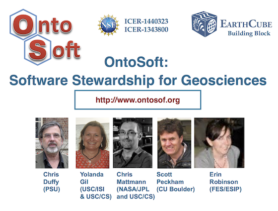
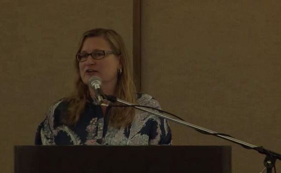
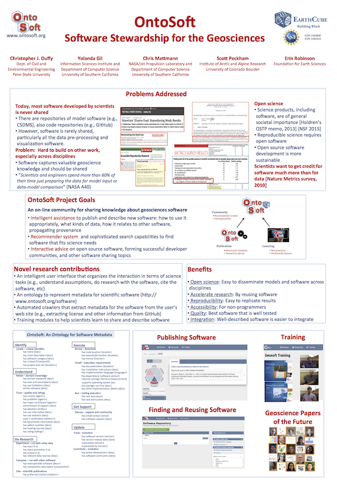
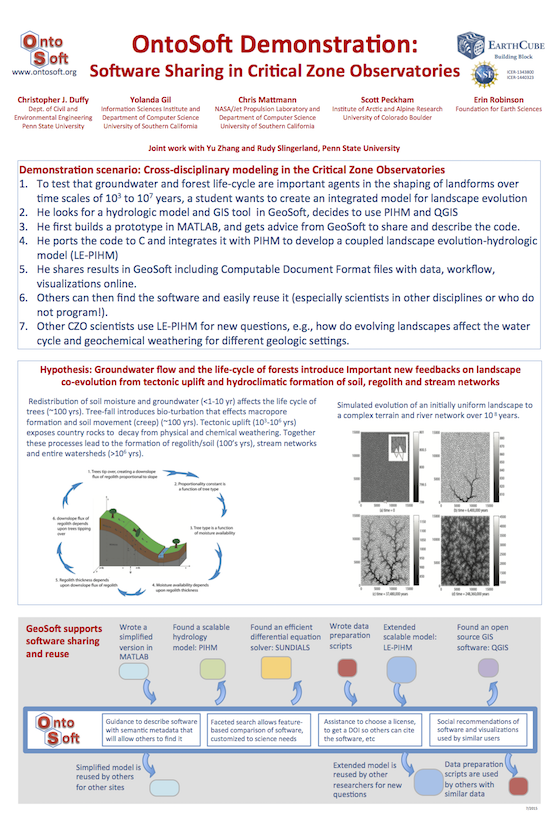
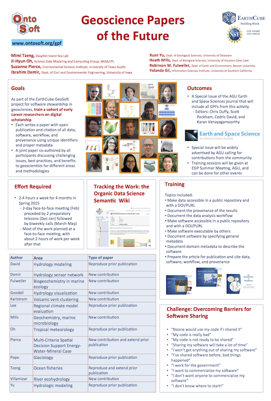

OntoSoft and the Geoscience Papers of the Future.
Yolanda Gil, EarthCube Webinar on Doing Geoscience with EarthCube Tools, January 22 2016.

OntoSoft: Software Stewardship for Geosciences.
Yolanda Gil, Cyber4Paleo (C4P) RCN Webinar, April 2015.
Quick Overview of OntoSoft.
Yolanda Gil, EarthCube Awards Site, October 2013.
What Do Geologists Want? A Computer Scientist's Report on a Field Trip to Yosemite and Owens Valley."
Yolanda Gil, Special EC3 Seminar, September 2014.

Shedding Light on the "Dark Software" of Science.
Yolanda Gil, 2014 ESIP Summer Meeting keynote, July 2014.
DRAT: Automated Analysis of Software Licenses.
Chris Mattmann, 2014 ESIP Summer Meeting, July 2014.
OntoSoft posters at the EarthCube 2015 All Hands Meeting
OntoSoft Overview

OntoSoft CZO Demo

OntoSoft GPF
